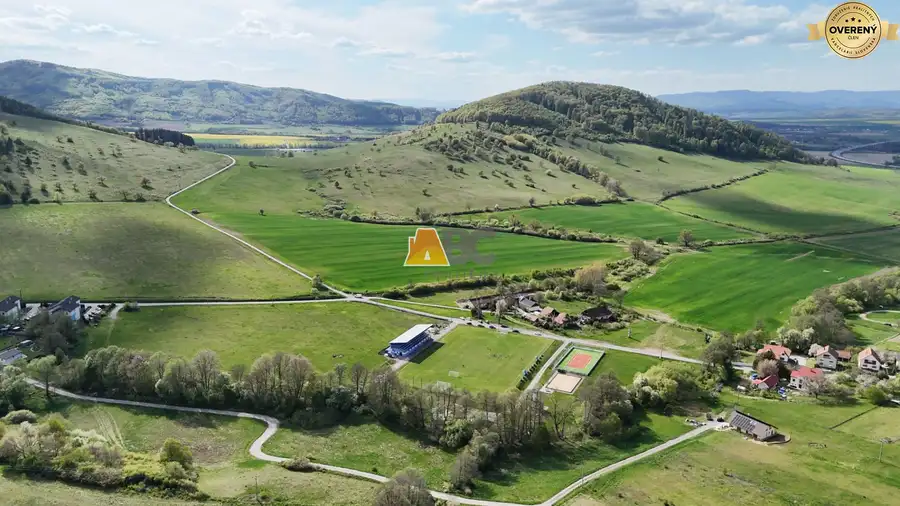
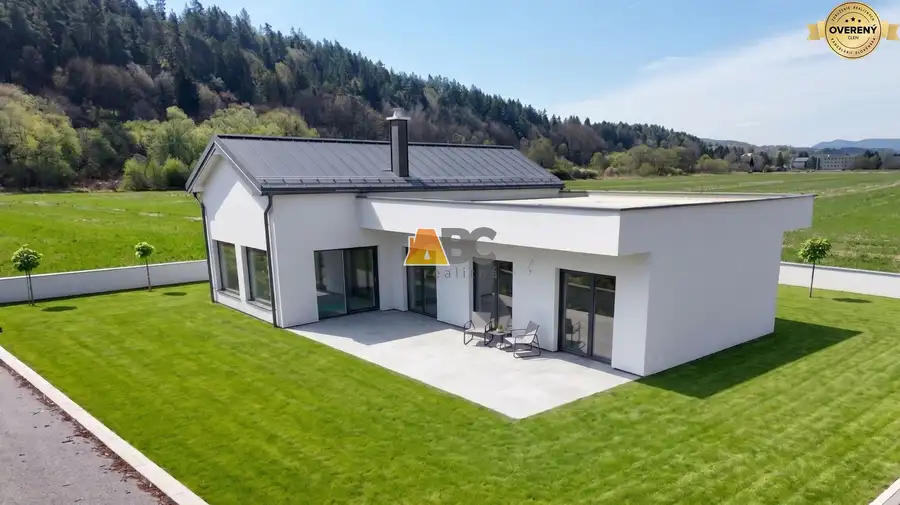
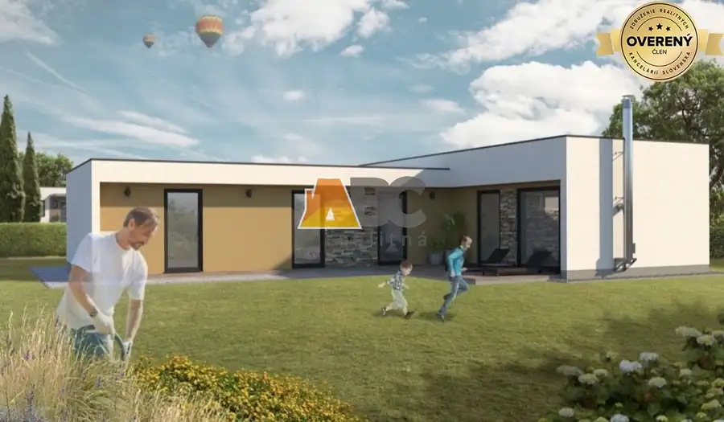
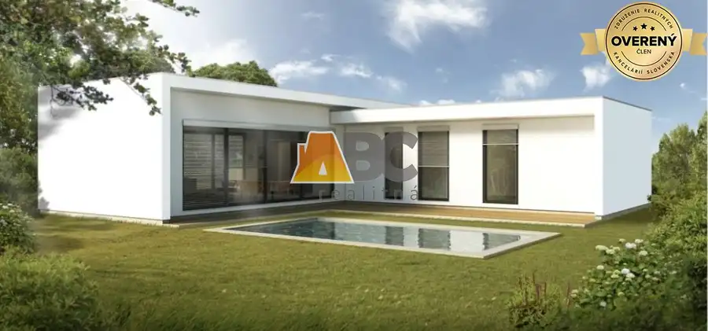
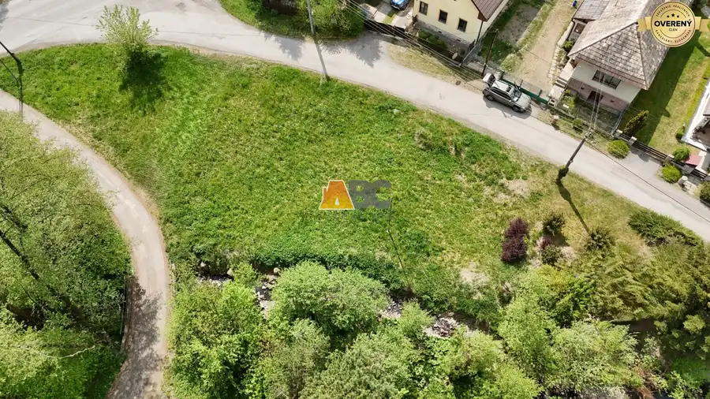
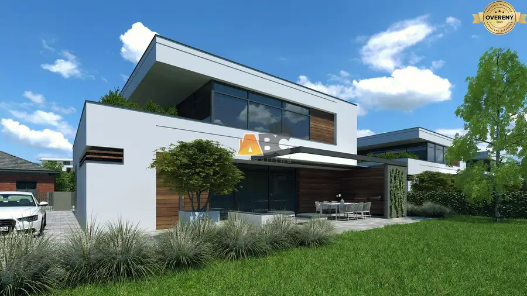
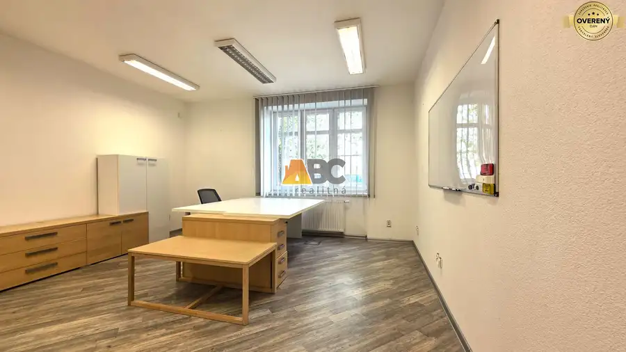
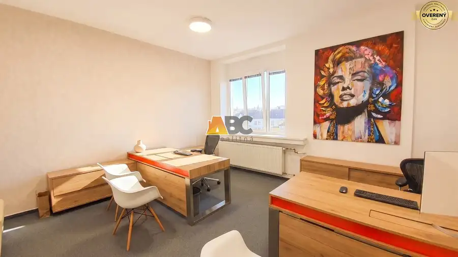
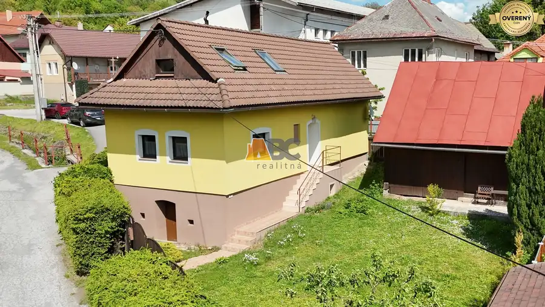

Aktuálna ponuka
Nehnuteľnosti, ktoré ponúkam
9 nehnuteľností na predaj a prenájom. Vyberte typ, alebo napíšte lokalitu.
9 z 9 ponúk

Pozemok10 49 000 €Pozemky pre rodinné domy Stožok Stožok 854 m² HLAVNÉ BENEFITY Úžasné prostredie a panoramatické výhľady = každodenná potrava pre dušu a zaručený relax po práci. Rozmery a tvary parciel = Takmer…
Rodinné domy5 340 000 €Novostavba moderného bungalovu na Sliači Sliač 4-izbový108 m² ABC realitná exkluzívne ponúka na predaj novostavbu 4-izbového bungalovu vo vynikajúcej lokalite. Táto ponuka je ideálnou voľbou pre každého, kto…
Rodinné domy4 310 000 €Nový rodinný dom vo výbornej lokalite na Sliači Sliač 4 izbový101 m² ABC realitná exkluzívne ponúka na predaj novostavbu 4-izbového bungalovu vo vynikajúcej lokalite. Táto ponuka je ideálnou voľbou pre každého, kto…
Rodinné domy7 290 000 €Nový rodinný dom v tichej lokalite na Sliači Sliač 3-izbový87.7 m² ABC realitná exkluzívne ponúka na predaj novostavbu 3-izbového bungalovu vo vynikajúcej lokalite. Táto ponuka je ideálnou voľbou pre každého, kto…
Pozemok7 85 000 €Stavebný pozemok v Turovej pri Zvolene Turová 4-izbový797 m² ABC realitná vám exkluzívne ponúka na predaj stavebný pozemok v obľúbenej obci Turová, len pár minút od Zvolena. HLAVNÉ BENEFITY Pokojné bývanie s…
Pozemok5 163 200 €Vzácny pozemok v najlepšej, hneď vypredanej časti projektu Slnečnica Sliač 680 m² Výnimočná príležitosť: Pozemok v najlepšej, hneď vypredanej časti projektu Slnečnica na Sliači – blízko „Rodinnej cestičky“ a v poslednom rade bez…
Nebytové priestory10 Cena dohodouPrenájom administratívnych priestorov Zvolen Zvolen 3-izbový88 m²1. podlažie HLAVNÉ VÝHODY: Lokalita: Rýchly dojazd do centra mesta a plynulá doprava aj počas špičky. Blízko je aj zastávka MHD. Občianska vybavenosť: Obchodná…
Nebytové priestory10 Cena dohodouPrenájom kancelárskych priestorov Zvolen centrum Zvolen 19 m²2. podlažie Získajte pre svoje podnikanie maximálnu viditeľnosť a prestíž na výbornej adrese. Lokalita, ktorá prispieva k pohode a šetrí čas: Priestory sa…
Rodinné domyRezervované10 165 000 €Rodinný dom v Podkoniciach Podkonice 4-izbový97.1 m² ABC realitná exkluzívne ponúka na predaj rodinný dom v Podkoniciach. Je ideálnou voľbou pre každého, kto hľadá únik z paneláku, viac slobody,…Tomuto výberu zatiaľ nezodpovedá žiadna ponuka. Napíšte mi, čo hľadáte.
Hľadám pre klientov